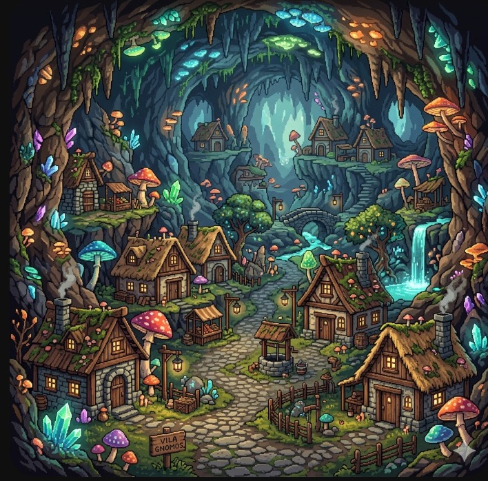
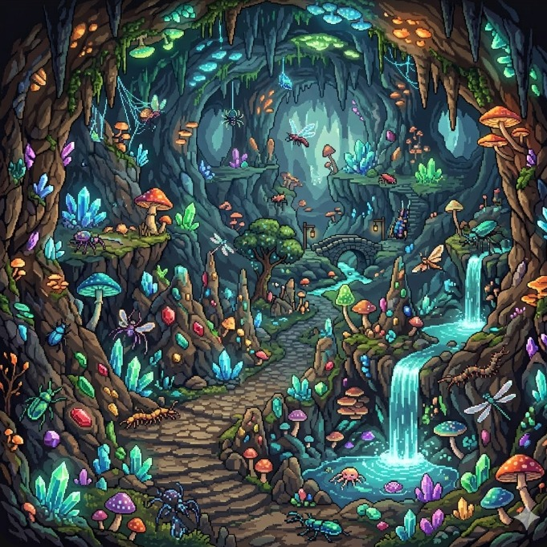
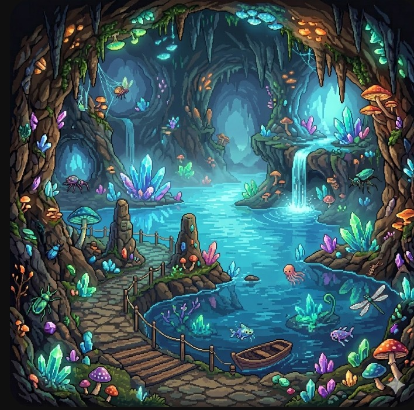
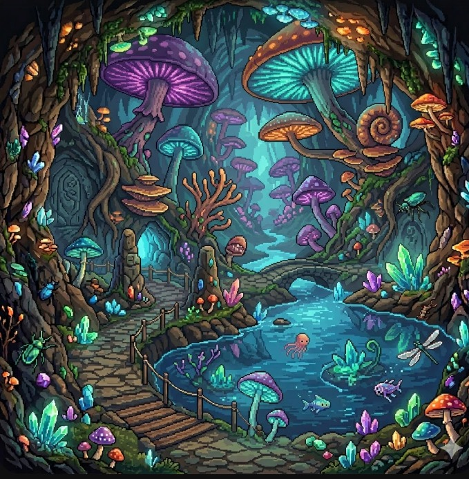
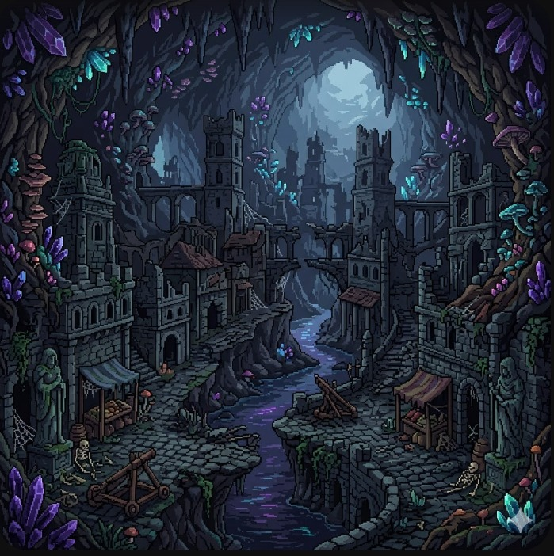
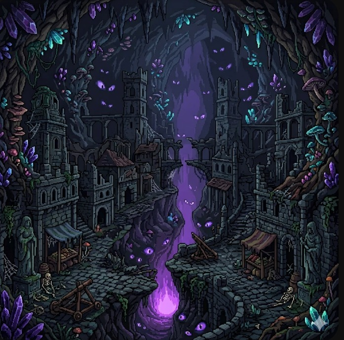
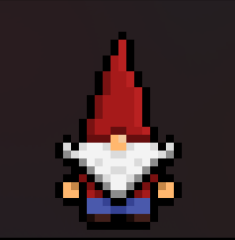
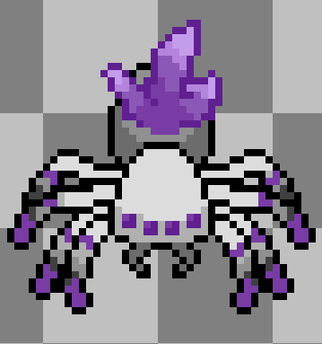
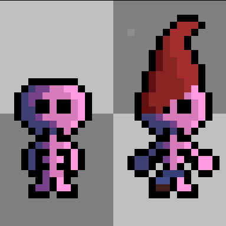

Área 0: Vila dos Gnomos

Área 1: Caverna

Área 2: Lagoa

Área 3: Floresta

Área 4: Cidade dos Gnomos

Área 5: Profundezas

Este jogo é um jogo plataforma / topdown 2D de exploração, aventura e ação, que inclui combate imersivo, explorações de um grande cenário de fantasia e descobertas da história de fundo ao longo da gameplay.
O jogo está sendo desenvolvido pelo grupo de jogos Obscura, composto por universitários dos cursos de Engenharia de Software e Ciência da Computação do Centro Universitário Filadélfia (UNIFIL)








